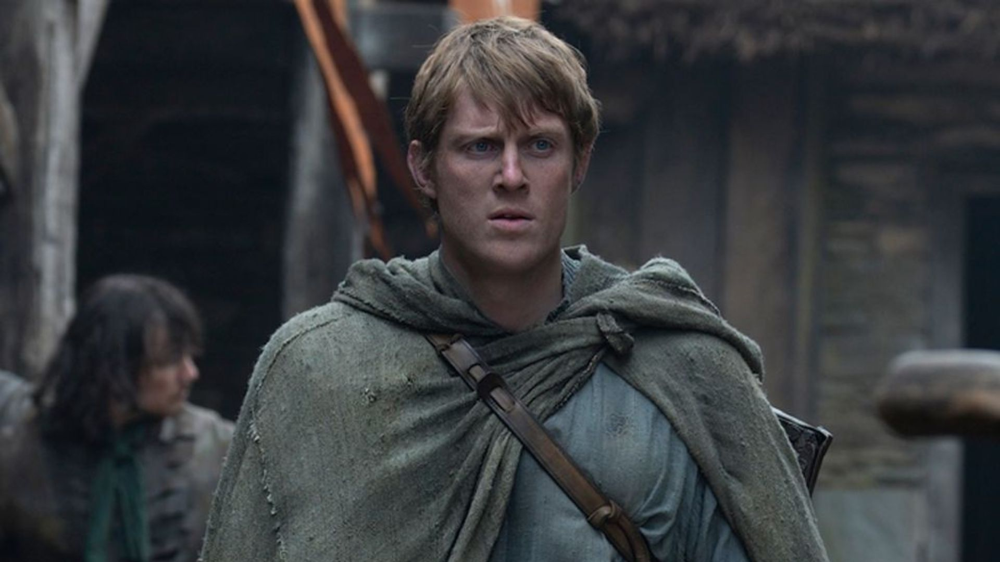

"Cavaleiro dos Sete Reinos" tem ótima estreia e anima fãs de Game of Thrones
Nova série ambientada no universo de Westeros conquista público logo em seu primeiro episódio.
Publicado em 2026 • Redação Geek News

A nova série "O Cavaleiro dos Sete Reinos", ambientada no universo de Game of Thrones, estreou recentemente e já está recebendo elogios tanto da crítica quanto do público. A produção acompanha as aventuras de Sor Duncan, o Alto, e seu jovem escudeiro Egg, personagens conhecidos pelos fãs das histórias escritas por George R. R. Martin.
Diferente das séries anteriores do universo de Westeros, a nova produção apresenta uma narrativa mais focada em jornadas individuais, amizade e honra. Mesmo assim, o clima político e as tensões entre as grandes casas continuam presentes na trama.
O primeiro episódio foi bastante elogiado pela qualidade da produção, especialmente pelos cenários detalhados e pela fidelidade ao material original dos livros.
Outro ponto que chamou atenção foi o desenvolvimento dos personagens principais, que rapidamente conquistaram o público.
A HBO afirmou que a série terá uma abordagem mais intimista, focando nas aventuras dos personagens enquanto eles viajam pelos Sete Reinos.
Mesmo com um tom mais leve que Game of Thrones, a produção ainda promete apresentar conflitos políticos e desafios perigosos ao longo da história.
Especialistas acreditam que a série pode se tornar mais um grande sucesso dentro do universo criado por George R. R. Martin.
Se mantiver o nível de qualidade apresentado na estreia, "O Cavaleiro dos Sete Reinos" tem potencial para se tornar uma das séries favoritas dos fãs de fantasia.